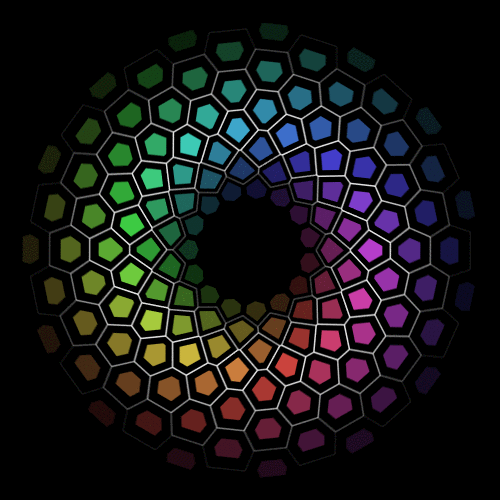

Shian Michael Meris.
Student and a Gamer.
Bio
Age: 18
Born In: Urdaneta City, Pangasinan (April 27, 2004)
Live In: Pozorrubio, Pangasinan
Elementary School: Pozzorubio Central School
High School and Senior High: Benigno V. Aldana National High School
Hobbies: Playing Games, Watching Movies, etc.
Favorite Food: Spaghetti
Least Favorite Food: Bitter Foods
About Me
I Shian Michael Meris a dedicated and motivated college student with a desire to learn and grow. Currently pursuing a degree in Bachelor of Science in Information Technology in Pangasinan State University Urdaneta, Im determined to succeed in their field of study and make a positive impact. With a strong work ethic and a passion for programming, I already gained valuable experience through testing and studying. When im on my free time, i enjoy playing games, coding and im always looking for new ways to challenge myself and expand my horizons. Im excited to see what the future holds for me and the contributions i will make.
My Photos and Moments
Contact Me
Poblacion III, Pozorrubio, Pangasinan, Philippines
Phone: (0969) 304 3146
Email: shianmichaelmeris@gmail.com / 22ur0682@psu.edu.ph